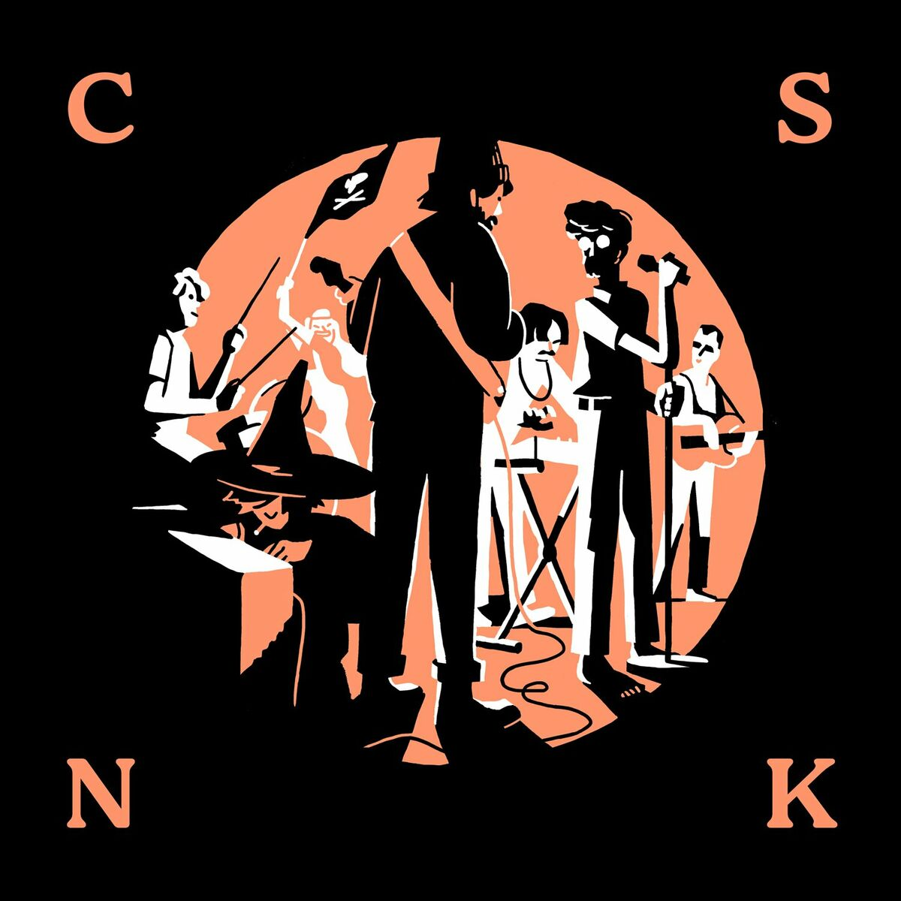
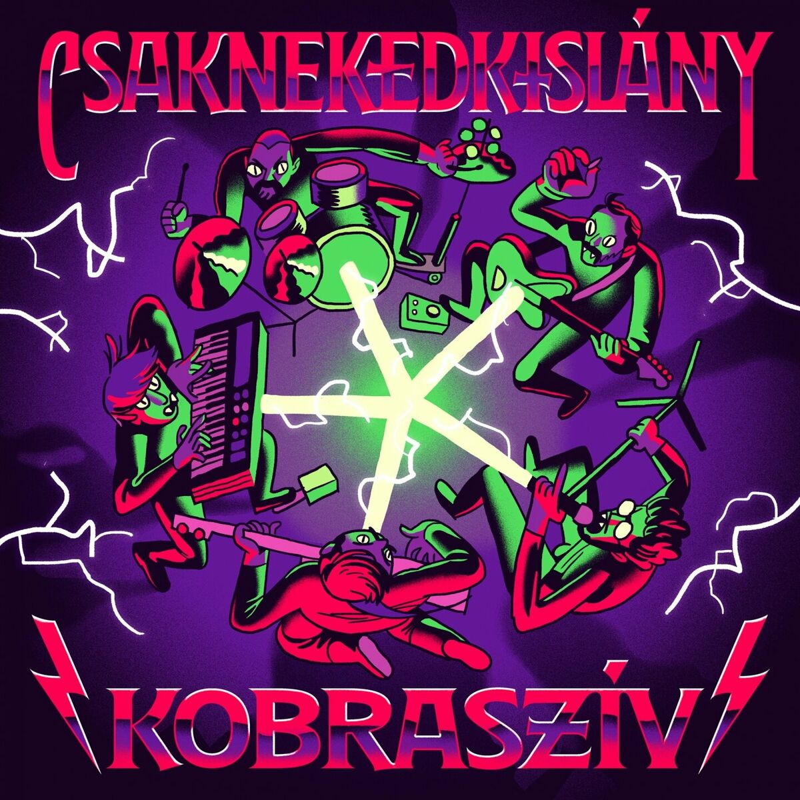

Kezdőlap
Albumok
Alapítótagok
Szemészes kötődések

Harag (Ft. Szalai Anna)
Aki élni akar
Megérdemlem
Házasság
A Gólyában ma este (Ft. Szalai Anna)
Nincs itt
Pánik (Ft. Csaknekedkislány)
Szó
Tavasz
Kávézóban
Ábrahám és Izsák (Ft. Song Factory Kórus)

Ujj Zsuzsi
Lődi
Botrány
Rólad akkor sem 2000
Féltél szeretni
Ági fia
Mese
Farmerkabát
Király úr
Hülye
Titkosügynökember
Nem bizony (Ft. Szalai Anna)
Jaaj
Ha El Akarsz Hagyni
Farkas
Pokol
Idegen
Rák
Nyúl
Róka
Farkas
Asszonygyilkosság
Hangosabban
Dick Dale
Falábú Nő
Idegen
Zenekar
Momés Lány
A DR. Balatoni Kalandja
Haldokló Vitéz
Nagy Világi Zaj
Tihany
Leltár
Expedíció
Cseh Tamás
Play Video